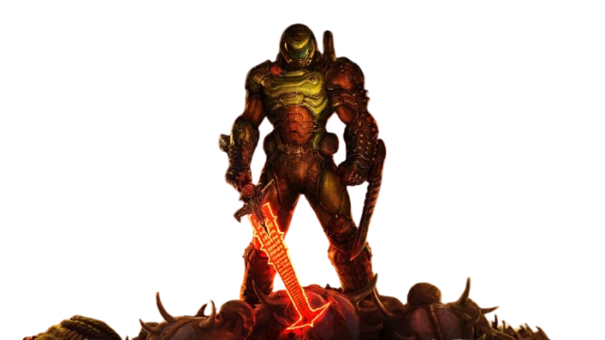
The DOOM Slayer is a relentless, unstoppable force of vengeance, sworn to annihilate all demonic entities that threaten humanity. Armed with devastating weapons and unmatched rage, he tears through hell’s armies with brutal efficiency. Feared by demons and revered by fans, the Slayer is the ultimate symbol of pure, unyielding power.
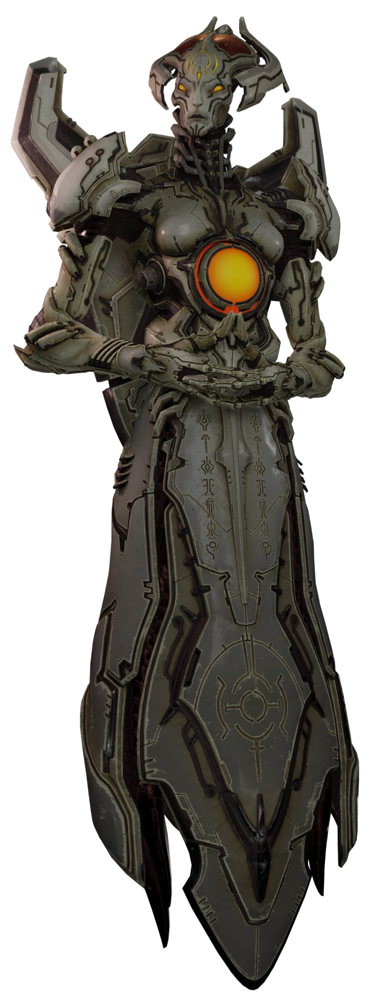
The Khan Maykr is the supreme ruler of the Maykrs, an ancient and godlike race responsible for maintaining the balance of the universe — at any cost. Radiating authority and divine power, she views herself as a savior, yet her twisted pursuit of order has led to a dark alliance with Hell itself. Floating above the battlefield in regal form, the Khan Maykr is as calculating as she is merciless, wielding advanced technology and faith-fueled fury against any who defy her vision.
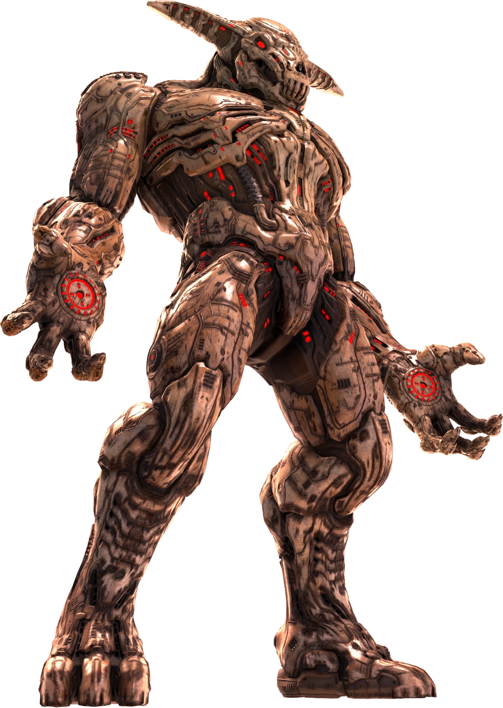
The Icon of Sin is a towering abomination of flesh, bone, and unholy energy—an ancient, godlike demon whose presence warps reality itself. Its face, a grotesque fusion of skull and muscle, is crowned by jagged horns that curve like the claws of some forgotten beast. Eyes burning with infernal fire peer from a sunken visage, as if gazing into the soul of the universe itself. In its chest pulses a fiery sigil of Hell’s power, and from its gaping maw it spews waves of demonic energy and spawns legions of the damned.
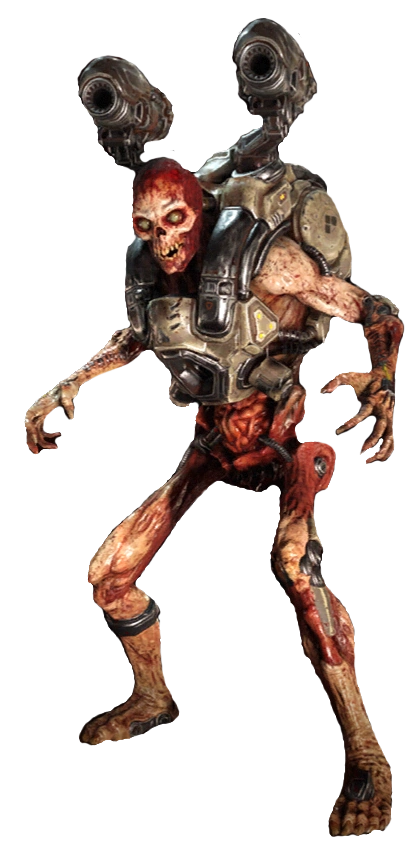
The Revenant is a grotesque fusion of bone, rotting flesh, and advanced Hell-forged technology — a twisted mockery of a human form reborn for endless war. Standing tall and skeletal, it moves with terrifying speed and agility, propelled by twin jet boosters mounted on its back. Its most iconic feature: a pair of shoulder-mounted rocket launchers, turning it into a walking artillery platform. What it lacks in armor, it makes up for with relentless mobility and aggression.
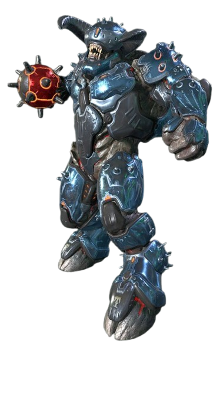
The Armored Baron is a brutal evolution of Hell’s already fearsome Baron of Hell — now enhanced with a layer of cracked infernal armor forged from cursed metal and dark energy. Towering and rage-fueled, this juggernaut carries an enormous, blazing energy mace, which it wields with terrifying force. Its armor isn’t just for show — it actively absorbs damage, forcing the Slayer to break through before the real fight even begins.
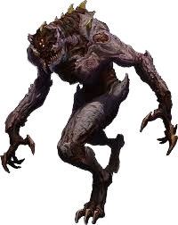
The Prowler is a fast, elusive demon known for its ability to teleport around the battlefield. Its hit-and-run tactics make it particularly dangerous, as it can strike quickly and disappear just as fast. Though physically weaker than some of the larger demons, the Prowler makes up for this with its speed and agility.
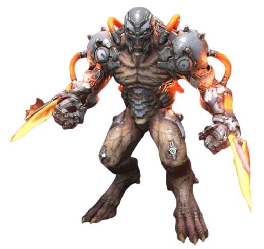
A Dread Knight in Doom Eternal is a tough, armored demon that looks like a heavily armed warrior. It carries a big sword and has a shield for defense. The Dread Knight is strong and can take a lot of damage, but it’s slow-moving. You’ll need to watch out for its attacks and carefully plan how to take it down since it's both powerful and resilient. Think of it as a heavy-hitter that’s more about brute strength than speed!
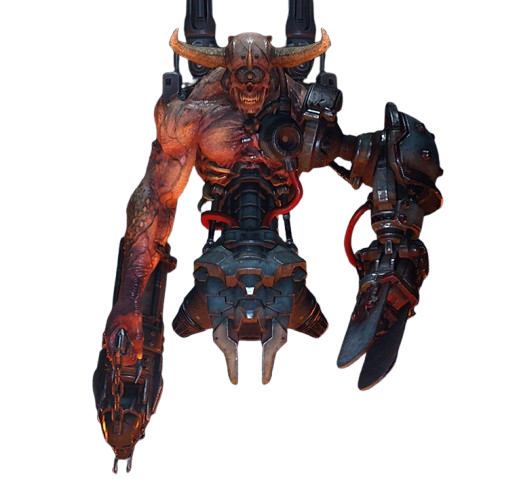
A Doom Hunter in Doom Eternal is a deadly, high-tech demon that combines both advanced machinery and demonic power. It looks like a mix of a robot and a demon, with a mechanical body, jet boosters, and a large cannon arm. It can fly around and shoot powerful projectiles at you, making it a dangerous and agile enemy. To defeat it, you’ll need to carefully dodge its attacks while finding weak spots to deal damage. It's a tough, fast-moving enemy that can be tricky to handle!
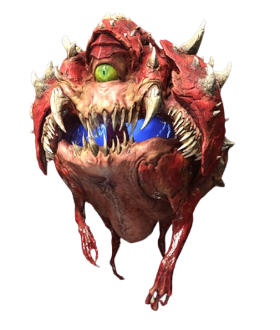
The Cacodemon in Doom Eternal is a classic and terrifying enemy. It’s a large, floating demon that looks like a giant red eyeball with a wide, toothy grin. Its single green eye is creepy, and it hurls purple plasma balls at the player from a distance. If you get too close, it can also try to bite you with its massive mouth.
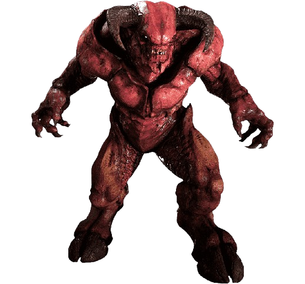
The Baron of Hell in Doom Eternal is one of the most intimidating demons you'll face. It’s a massive, hulking creature with thick, armored skin, and it's known for its strength and aggression. The Baron has large, muscular arms and a fearsome set of horns, giving it a demonic, minotaur-like appearance.
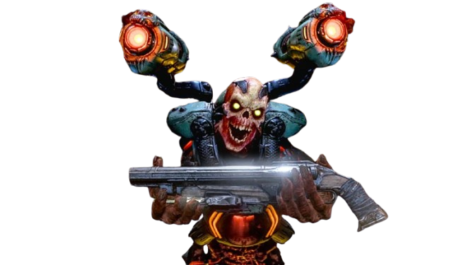
The Revenant itself is a terrifying, skeletal figure clad in futuristic armor, with glowing red eyes. Its typical role in combat is to fly around with its jetpack, launching missiles at the player from a distance. When armed with a rocket launcher, the Revenant becomes even more dangerous, capable of firing explosive rounds directly at the Doom Slayer.
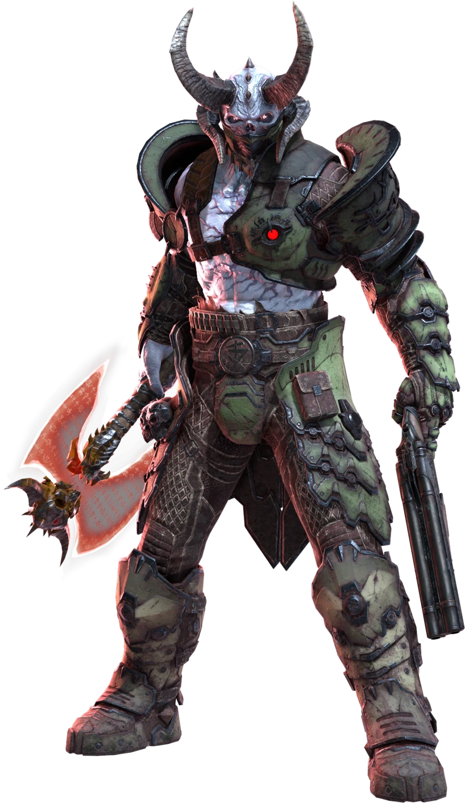
The Marauder in Doom Eternal is one of the most challenging and unique enemies in the game. It’s a powerful, heavily armored demon that serves as a high-level adversary, combining both aggressive melee combat and ranged attacks.
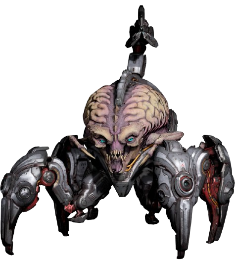
The Archnotron in Doom Eternal is a futuristic, cybernetic demon that combines advanced technology with demonic power. It's a formidable mid-range enemy that appears later in the game and presents a significant challenge due to its range and the way it can attack from a distance.
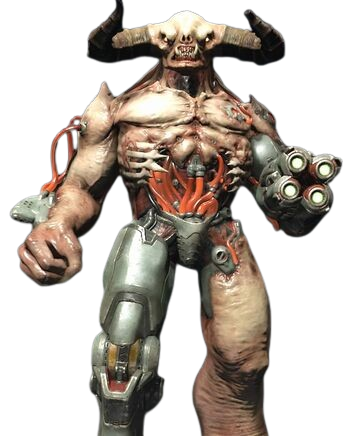
The Tyrant in Doom Eternal is one of the most formidable and terrifying demons you’ll face. It’s a massive, heavily armored demon that combines overwhelming strength with devastating ranged attacks. Tyrants are powerful bosses that pack a punch, making them one of the most memorable threats in the game.
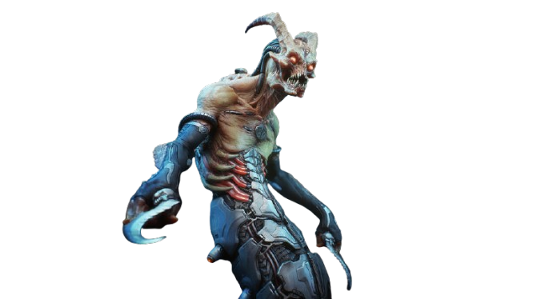
The Whiplash in Doom Eternal is a fast and aggressive demon that uses its speed and agility to overwhelm the player. It’s a serpentine demon with long, whip-like tails, hence the name "Whiplash." Despite its slender, somewhat agile appearance, the Whiplash is incredibly dangerous when it closes in on you.